Front seat ASSY RH decomposition |
| 1. RH seat Front Seat Track Bracket LWR RR RH is removed |
| 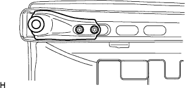 |
Remove the four nuts and remove the left and right front seat track brackets, LWR RR RH.
| 2. Remove the front sheet leg ASSY RH |
Remove the two nuts and remove the front seat leg ASSY RH.
| 3. Remove the front seat leg cover RH |
Remove the front seat leg cover RH.
| 4. Front sheet leg cover LH (RH seat yo) should be removed |
Remove the front seat leg cover LH.
| 5. Remove the front seat headrest ASSY |
Remove the front seat headrest ASSY.
| 6. Seat armrest cap No.1 removed (armrest -equipped car) |
| 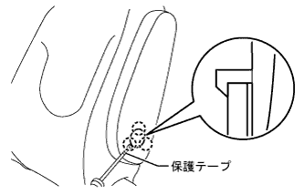 |
Use a minus thin blade driver with a protective tape to remove the claws and remove the No. 1 sheet armrest cap.
| 7. Seat armrest ASSY C LH removed (armrest -equipped car) |
| 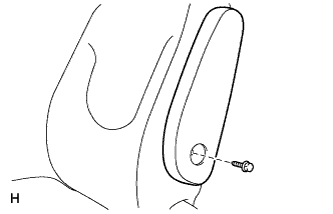 |
Remove the bolt and remove the seat armrest ASSY C LH.
| 8. Vertical adjuster cover RH removed |
| 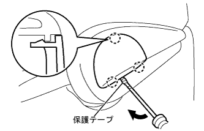 |
Use a minus thin -blade driver with a protective tape to remove the claws and remove the vertical agasta cover RH.
| 9. Vertical adjuster handle RH is removed |
Remove the two screws and remove the Vertical Adjusta handle RH.
| 10. Reclining Adjustment Relley Relley Handle RH is removed |
| 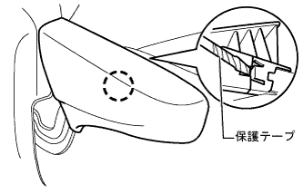 |
With the handle pulled up, use a minus thin -blade driver with a protective tape to remove the claws, and remove the reclining adjuster release handle RH.
| 11. The front seat cushion shield RH is removed |
| 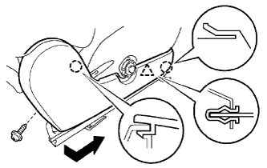 |
Take off the screw.
Remove the upper claw on the upper side.
The cover is shifted in the direction of the arrow in the figure, removing the clip and claws, and remove the front seat cushion shield RH.
| 12. Remove the front seat cushion shield Inn RH |
| 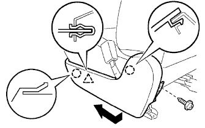 |
Take off the screw.
Remove the upper claw on the upper side.
Shift the cover in the direction of the arrow in the figure to remove the clip and claws, and remove the front seat cushion shield INN RH.
| 13. Remove the front seat inner na belt ASSY RH |
Cut the wire harness clamp.
Remove the bolt and remove the front seat innabelt asy RH.
| 14. Remove the front seat back hook |
| 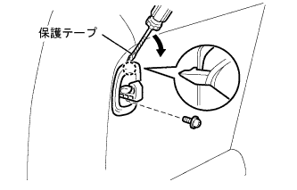 |
Wake up the hook.
Take off the screw.
Use a flathead driver with a protective tape to remove the front seat cross -hook.
| 15. Remove the front seat headrest support |
| 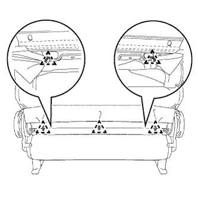 |
Turn the front seat cross -cover cover and remove 5 hogling.
| 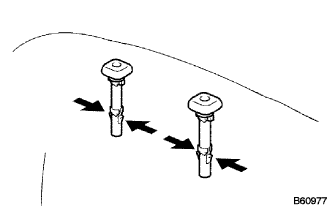 |
Remove the claws and remove two front seat headrest support.
| 16. Front seat backpad (cover Tsuki) RH is removed |
Take off the front seat Batsuku cover & pad RH.
| 17. Front seat cushion cover & pad RH removed |
| 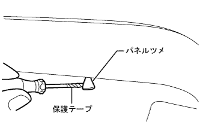 |
Use a flashed screwdriver with a protective tape to cause a panel claw on the front seat cushion cover and pad RH RH.
Remove the J hook on the front of the cushion cover.
Remove the hogling and remove the front seat cushion cover & pad RH.
| 18. Remove Vertical Adjusta Spacer |
| 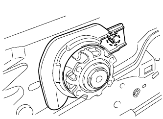 |
Remove the claws and remove the vertical agasta spacer.
| 19. Reclining Adjustment Inside Cover RH (RH Seat Yo) should be removed |
| 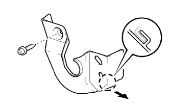 |
Remove the screw and remove the claws and remove the reclining adjustment side cover RH ((RH seat yo)).
| 20. Reclining adjuster inside cover LH (RH seat yo) |
Remove the screw and remove the claws, and remove the reclining adjustment side cover LH (RH seat yo).
| 21. Reclining adjuster inside cover RH is removed |
| 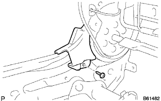 |
Remove the screw and remove the reclining adjustment side cover RH.
| 22. Reclining adjuster inside cover LH removed |
Remove the screw and remove the reclining adjustment side cover LH.
| 23. The front seat cushion shield LWR RH is removed |
| 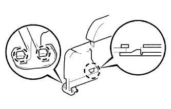 |
Remove the claws and remove the front seat cushion shield LWR RH.
| 24. Front seat cushion shield LWR LH removed |
Remove the claws and remove the front seat cushion shield LWR LH.